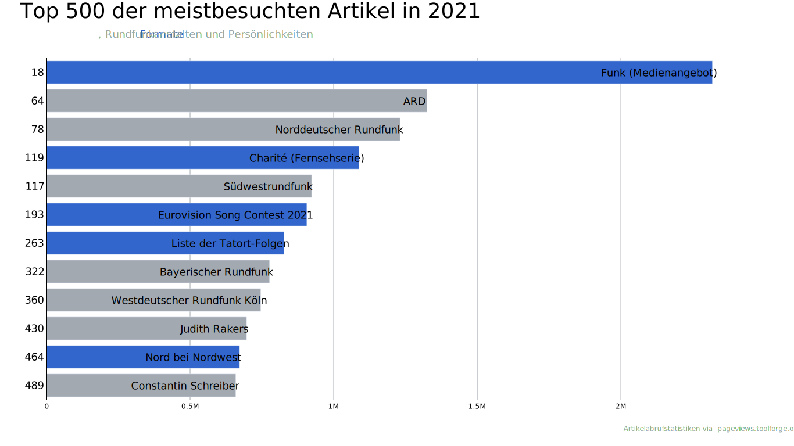

Balkendiagramm¶
ard_bar.ipynb¶
import pandas as pd
import plotly.graph_objs as go
import color
rawdf = pd.read_csv("../data/ard.csv")
df = rawdf[["Rank", "Page", "Views"]]
df["Rank"] = df["Rank"].astype(str)
color_list = [color.ACCENT50, color.BASE50, color.BASE50, color.ACCENT50, color.BASE50, color.ACCENT50, color.ACCENT50, color.BASE50, color.BASE50, color.BASE50, color.ACCENT50, color.BASE50]
color_list.reverse()
layout = go.Layout(
plot_bgcolor=color.PLOT_BGCOLOR,
paper_bgcolor=color.PAPER_BGCOLOR,
showlegend=False,
xaxis={
"showgrid": True,
"showline": True,
"gridcolor": color.GRID_COLOR,
"linecolor": color.AXIS_COLOR,
"fixedrange": True,
},
yaxis={
"showgrid": False,
"showline":True,
"linecolor": color.AXIS_COLOR,
#"tickfont": {"color": "rgba(0,0,0,0)"},
"tickfont": {"color": color.PRIMARY_FONT_COLOR, "family": color.PRIMARY_FONT, "size": 18},
"fixedrange": True,
},
font={"family": color.PRIMARY_FONT, "color": color.AXIS_COLOR},
width=1366,
height=768,
)
ard = go.Figure(
go.Bar(
x=df["Views"][::-1],
y=df["Rank"][::-1],
orientation="h",
hoverinfo="skip",
text=df["Page"][::-1],
textposition="inside",
textfont={"color": color.PRIMARY_FONT_COLOR, "family": color.PRIMARY_FONT, "size": 18},
marker_color=color_list,
),
layout=layout
)
ard.layout.annotations = [
go.layout.Annotation(
x=0, y=1.1, xref="paper", yref="paper", xanchor="left", yanchor="bottom", showarrow=False,
font={"size": 36, "color": color.PRIMARY_FONT_COLOR, "family": color.PRIMARY_FONT},
text="Top 500 der meistbesuchten Artikel in 2021",
),
go.layout.Annotation(
x=0, y=1.05, xref="paper", yref="paper", xanchor="left", yanchor="bottom", showarrow=False,
font={"size": 18, "color": color.SECONDARY_FONT_COLOR, "family": color.SECONDARY_FONT},
text=f"<span style='color:{color.ACCENT50}'>Formate</span>, Rundfunkanstalten und Persönlichkeiten",
),
go.layout.Annotation(
x=1, y=-0.1, xref="paper", yref="paper", xanchor="right", yanchor="bottom", showarrow=False,
font={"size": 12, "color": color.SECONDARY_FONT_COLOR, "family": color.PRIMARY_FONT},
text="Artikelabrufstatistiken via <a href='https://pageviews.toolforge.org'>pageviews.toolforge.org</a> |",
),
]
